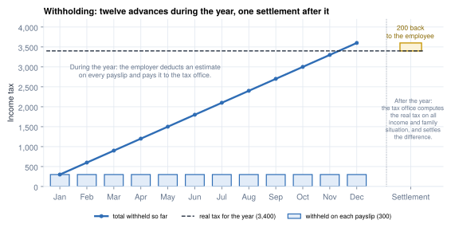
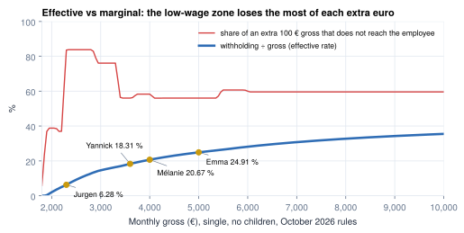

Withholding tax
A yearly tax, collected in instalments: five ways to do it
- Explain withholding as an advance on a yearly income tax, and name the main withholding methods
- Compute a progressive tax slice by slice
- Run an annualisation formula by hand, for a single employee and for a married one
- Tell the marginal rate from the effective rate, and find the low-wage trap
- Explain why bonuses and other irregular pay need their own tax method
Mélanie's withholding tax for October 2026 is 826.70 €. It is not "the tax on 4,000 €": it is one twelfth of a yearly tax, computed as if she earned this salary every month. Another country would look at what she earned since January, read a table, or not withhold at all. Knowing which road a country takes explains almost every rule in its tax module.
What a withholding tax is
Income tax is a tax on a person's income for a whole year. In most countries the employee does not pay it in one go at the end of the year. Instead, the employer deducts a part of it from every payslip and pays that part to the tax office on the employee's behalf. That deduction is the withholding tax (also called pay-as-you-earn, PAYE, or tax at source).
Three things follow from that definition:
- It is the employee's tax, not the employer's. It comes out of the gross, like the employee contributions. The employer is only a collector: it deducts, declares and pays.
- It is an estimate. On the payslip, the employer does not know the employee's whole year: other income, a second job, a partner's income, deductible expenses. So each instalment is a best guess.
- The real tax comes later. After the year, the tax office computes the real tax on everything and settles the difference: a refund, or a bill to the employee.

Withholding is an advance
So every localization answers one question: how do you turn a yearly tax into a monthly instalment? Countries pick one of five methods.
The method shapes the code. An annualising country needs only this month's lines; a cumulative one needs every earlier payslip of the tax year, including a previous employer's.
Around the world
- India: cumulative; actual months plus projected months give the annual tax, spread over the months left.
- Mexico: tax tables per pay frequency, plus an employment subsidy.
- United States: annualise per period with the employee's W-4, then a second layer of state tax.
- Australia: period pay converted to weekly, put through coefficients (a × x − b), converted back.
- Hong Kong: no withholding; each employee pays his own tax.
Progressive scales: slice by slice
Most income taxes are progressive: each slice of income is taxed at its own band's rate. Belgium's 2026 scale:3
| Annual net taxable (€) | Tax |
|---|---|
| 0.01 – 16,710.00 | 26.75 % |
| 16,710.01 – 29,500.00 | 4,469.93 + 42.80 % above 16,710 |
| 29,500.01 – 51,050.00 | 9,944.05 + 48.15 % above 29,500 |
| above 51,050.00 | 20,320.38 + 53.50 % above 51,050 |
The fixed amounts are the tax on all slices below each band, precomputed so a rule looks up one row.
Around the world
- Netherlands: monthly brackets, the annual table divided by 12, with separate tables for residents and non-residents.
- Kenya: monthly bands, then fixed reliefs subtracted (personal relief, insurance, housing levy).
- Morocco: one monthly table where each bracket has a rate and a fixed deduction, the same shortcut as Belgium's fixed amounts.
- Turkey, Poland: the bands apply to the income since 1 January, so an employee climbs into a higher band during the year.
- Lithuania: one flat rate, but the tax-free amount shrinks as income rises, which makes the tax progressive anyway.
Common pitfall
"Mélanie is in the 48.15 % band, so her tax is 48.15 %." Only the slice above 29,500 € is. Her withholding is 20.67 % of her gross.7
Case study: Belgium annualises
Belgium's official "key formula" turns one month into a year, applies the scale and family relief, and divides by twelve.3
| Step | Rule (2026) |
|---|---|
| A. Annual gross | monthly taxable base × 12 |
| B. Annual net | minus a flat allowance for professional expenses: 30 %, at most 6,070 € |
| C. Annual tax | scale, minus the tax on a tax-free sum, minus family reductions; never below 0 |
| D. Monthly | annual tax ÷ 12 |
| E. Reductions | low-wage tax credit, overtime, part of pension contributions; never below 0 |
Worked example: Mélanie, October 2026
| Step | Amount (€) |
|---|---|
| GROSS Monthly taxable base | 3,477.20 |
| A. × 12 | 41,726.40 |
| B. − professional expenses (capped) | −6,070.00 |
| Annual net taxable | 35,656.40 |
| C. Scale: 9,944.05 + 48.15 % × (35,656.40 − 29,500) | 12,908.36 |
| − tax on the tax-free sum of 11,170 € | −2,987.98 |
| Annual tax | 9,920.38 |
| P.P D. ÷ 12 | 826.70 |
The calculator reproduces the official simulator's examples to the cent.5
In Odoo. Mélanie's payslip shows 826.69 €: Odoo rounds the monthly amount down, where the official formula rounds half up. Chapter 10 lists this as a question for an expert.8
Key idea
An annualising method aims at the tax of someone who earns this month's pay twelve times. Anything else (other income, a partial year, a raise) is settled by the final assessment. A cumulative method makes the opposite choice: each month corrects the past.
Family situation
Almost every income tax adjusts for the household, with few levers: a personal allowance (Belgium, Kenya), a reduction per child (Belgium, Morocco), splitting with a spouse (Belgium), a tax class by family status (Luxembourg, Indonesia), or the employee's own form (US W-4).
Marie is married, her spouse has no income, and they have two children. Belgium gives her a marital quotient, which moves up to 30 % of her income (capped) to her spouse, taxed in the lowest band with a second tax-free sum, and a reduction for two children.3
Worked example: Marie, October 2026
Taxable base 6,668.32 € (with the car, Chapter 2).
| Step | Amount (€) |
|---|---|
| Annual gross 6,668.32 × 12 | 80,019.84 |
| − professional expenses | −6,070.00 |
| Annual net taxable | 73,949.84 |
| Marital quotient: 30 % is above the cap, so | 13,790.00 |
| Scale on the quotient | 3,688.83 |
| Scale on the rest (73,949.84 − 13,790.00) | 25,194.14 |
| − tax-free sum twice (2 × 2,987.98) | −5,975.96 |
| Base tax | 22,907.01 |
| − reduction for 2 children | −1,656.00 |
| P.P ÷ 12 | 1,770.92 |
With the same taxable base, a single person would have 2,465.32 € withheld.7
Open question
Odoo withholds 1,750.15 € from Marie, 20.77 € less, because it deducts a yearly 500 € transport exemption. Whether an employee with a company car is entitled to it is not settled by the sources read for this book (Chapter 10).8
A formula that changes in November
Tax parameters are dated. Belgium published a new formula on 2 October 2026 for pay from 1 November: a higher tax-free sum, but a lower cap on the marital quotient and smaller child reductions.2
| Mélanie | Jurgen | Marie | |
|---|---|---|---|
| Withholding October (Jan-2026 formula) | 826.70 | 144.33 | 1,770.92 |
| Withholding November (Nov-2026 formula) | 818.23 | 135.86 | 1,799.78 |
| Difference | −8.47 | −8.47 | +28.86 |
The singles gain only the higher tax-free sum. Marie gets it twice, but her capped quotient keeps more of her income in her own high band.4 Chapter 11 shows how Odoo keeps both formulas, each with its start date.
Marginal and effective rates
The effective rate is tax ÷ gross. The marginal rate is what happens to one more euro, and it is not the band rate when contributions and reductions move too.

| +100.00 € gross per month | Mélanie | Jurgen | Marie |
|---|---|---|---|
| Extra employee contributions | 13.07 | 39.89 | 13.07 |
| Extra withholding | 41.86 | 42.61 | 46.51 |
| Extra special contribution | 3.38 | 1.10 | 0.00 |
| Extra net | 41.69 | 16.40 | 40.42 |
| Share of the 100 € lost | 58.31 % | 83.60 % | 59.58 % |
Jurgen keeps 16.40 € of a 100 € raise: his contributions rise by 39.89 €, not 13.07 €, because his low-wage reduction shrinks. His effective rate is only 6.28 %, but his marginal loss is the cast's highest.7 This "low-wage trap" exists wherever a reduction fades out.
In practice
When HR asks "what does a 100 € raise give net?", run the payslip twice and subtract. Never answer with the band rate.
Irregular pay: bonuses, holiday pay, indemnities
An annualising formula applied to a once-a-year bonus would tax it as if paid every month, far too high. So countries use a separate method:
| Method | How | Examples in Odoo |
|---|---|---|
| Flat rate by bracket | a fixed rate chosen from normal annual pay | Belgium |
| Difference method | tax(year + bonus) − tax(year) | Mexico |
| Separate rule | its own table or formula | Luxembourg |
| None needed | a cumulative method absorbs the bonus | India, Turkey |
In Belgium, holiday pay and bonuses get a flat rate chosen from annual normal pay; a notice indemnity gets a third scale.6
| Mélanie, annual normal gross 41,726.40 € | Taxable | Rate | Withholding |
|---|---|---|---|
| Holiday bonus, June 2026 | 3,235.62 | 42.39 % | 1,371.58 |
| Year-end premium, December 2026 | 3,477.20 | 46.44 % | 1,614.81 |
Odoo's June payslip gives Mélanie the same 1,371.58 €.8 The calculator takes "annual normal gross" as (monthly gross − employee contributions) × 12, common practice that the rules retrieved do not define (UNVERIFIED).
Withholding is not the final tax
| Withholding | Final tax | |
|---|---|---|
| Computed by | the employer, every period | the tax office, once a year |
| Basis | the payslip (one month, or the year so far) | the real year's income, all sources |
| Who settles the difference | — | the employee, with the tax office |
Yannick joins in March. His March withholding of 163.37 € assumes he earns 1,991.49 € taxable every month of the year; the assessment settles the difference with his previous employer's income. This book computes no final tax (UNVERIFIED).1
In Odoo. Belgium's formula is a chain of salary rules, from GROSS.Y (× 12) through Y.P.P (scale) to P.P, with dated rule parameters for the scale and family table. A cumulative localization looks different: India's TDS rule calls a Python method that reads the year's payslips.
Summary
- Withholding is an advance on a yearly tax. Countries turn the year into periods by annualising, by cumulating year to date, with period tables, or not at all.
- Progressive scales are computed slice by slice; the band rate is not the tax rate.
- Belgium annualises: × 12, − professional expenses, scale, − tax-free sum, − family reductions, ÷ 12. Mélanie: 826.70 €.
- Family relief uses a few levers: allowances, dependants, spouse splitting, tax classes. Marie: 1,770.92 € instead of 2,465.32 € as a single person.
- Tax parameters are dated; the 1 November 2026 formula lowers singles' withholding by 8.47 € and raises Marie's by 28.86 €.
- The marginal loss is not the band rate: Jurgen keeps only 16.40 € of a 100 € raise.
- Bonuses and other irregular pay need their own method; an annualising formula would overtax them.
-
SPF Finances, withholding tax return (withholding is an advance credited against the final tax): https://finances.belgium.be/fr/entreprises/personnel_et_remuneration/precompte_professionnel/declaration. ↩
-
SPF Finances, Annex III AR/CIR 92 version history (AR 11.12.2025, AR 14.02.2026, AR 24.07.2026, AR 27.09.2026 published 2.10.2026): https://www.minfin.fgov.be/myminfin-web/pages/public/fisconet/document/439228c6-67bb-4e75-a9e1-4cabe4dc62ec. ↩
-
SPF Finances, key formula from 1 January 2026 (n° 3, 5, 7–21 and annexes 1, 3, 4): https://www.minfin.fgov.be/myminfin-web/pages/public/fisconet/document/389035ca-432e-422b-859d-2d32fbdaa4cf. ↩↩↩
-
SPF Finances, Annex III consolidated with the AR of 27 September 2026 (formula from 1 November 2026, n° 32, 34, 38–40, 54): https://www.minfin.fgov.be/myminfin-web/pages/public/fisconet/document/0c174ec5-448b-4d1e-983b-fc457e5e7e28. ↩
-
SPF Finances withholding simulators 2026, January version https://www.minfin.fgov.be/myminfin-rest/fisconetPlus/public/document/addenda/SimulateurPrP2026verrouilleFR.xlsx and November version https://www.minfin.fgov.be/myminfin-rest/fisconetPlus/public/document/addenda/SimulateurPrP2026novembreverrouill%C3%A9.xlsx. ↩
-
SPF Finances, Annex III from 1 January 2026, n° 53–62 (exceptional income, arrears and indemnities): https://www.minfin.fgov.be/myminfin-web/pages/public/fisconet/document/536a741e-81d6-4605-ad11-8e07ebc4a440. ↩
-
Independent calculator,
research/numbers_be_calc.md, sections 10.3 to 10.6. ↩↩↩ -
Payslips computed by Odoo master on the demo database,
research/numbers_be.md: Marie's February 2026 lines (TRANSPORT_TAX_DED), the October 2026 summary, the double holiday pay and Emma's 13th month. ↩↩↩